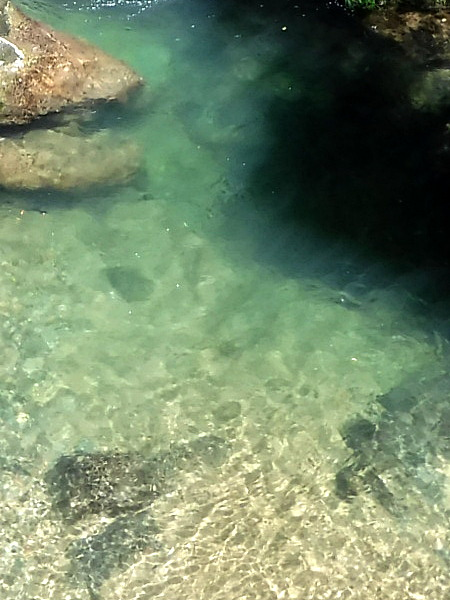
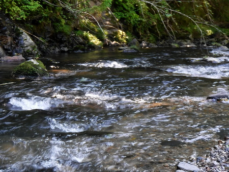
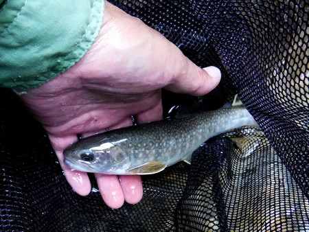
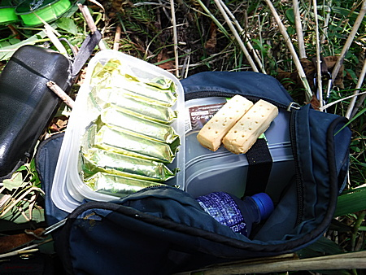
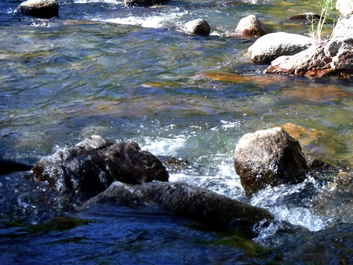
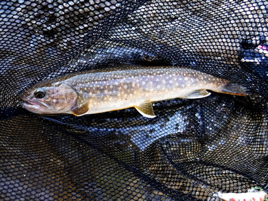

釣行日誌 故郷編
2021/08/28 夏のイワナ、２つの集落で２尾
先週は道に迷ってしまって、叔父が５年前に釣り上げたという50cm オーバーのイワナのポイントへ行き着けなかった。8/26 の木曜、仕事を終え、市内で１番大きな書店で国土地理院の地図を買って叔父の家へ行く。
２人して老眼鏡やらルーペを使って地図を判読し、叔父の記憶を呼び覚まし、だいたい100mくらいの範囲に大物ポイントを絞り込む。
「これぐらいはあったがなぁ.....」
と広げた叔父の両手は、聞いていた 50cm オーバーよりもだいぶ狭かったのが気になった。（笑）
朝一番でレンタカーを借りだし、10:50頃に、目的地の下流にある橋に着く。渓谷を覗くと、眼下の淵には小物アマゴが数匹泳いでいる。意外と水量が減っていないことに驚く。お盆は長雨だったので、山には水が十二分に浸み込んでいるのだろう。

写っていませんが
やや上流の空き地に車を停め、11:10 頃より入渓する。少し上流へ歩くと、ごく小さな沢というか側溝があったので、そこから静かに川に降りる。
すぐ上流に小堰堤があり、落ち込みにスピナーを投げると小物、おそらくアマゴが多数追って来る。
『おっ！ 居ますね！』
しかし、堰堤の落ち込みは、流れで深く掘れてしまうことを防ぐためにコンクリートで固められてしまっており、魚の隠れる場所が無い。これでは遡上するためにジャンプすることも出来ないだろう。
それほど急勾配な流れでもなく、農業用の取水堰堤でもなく、砂防のためだろうが残念なことである。
ちょっと釣り下って行くと、瀬の尻に青黒い深みがあった。

対岸遠くへフローティングミノーを投げて扇形にごくゆっくりと引いて来ると、根掛かりとは違う反応があった。もう一度引くと、今度はカツッと当たった。
『あっ！ フックに触ったか？ もう出ないかな？』
ダメ元で３回目を引いてくるとヒット！ 良く引いたが、強引に引っ張り上げてネットで受けた。可愛いイワナだった。 体色が青白く、斑点も白かった。増水している川の水に対応しているのだろうか？

だんだん釣り下ってゆくが、良いポイントがあるもののヒットが無い。叔父の教えてくれた、これぞ核心部！ と思われる地点でも、まったくの無反応。小物イワナも現れない。クモの巣が水面上に張り巡らされており、ミノーを投げると空中に留まったままになってしまう。（笑）
いくつもいくつも小堰堤の連続で、これでは魚も昇れないし、繁殖もできまい。
13:20 まで頑張ったが、腹が減って集中力が切れてきたので、カロリーメイト＋アクエリアスで昼食とする。

昼食後、釣りを再開したものの、やはりアタリは無く、だんだんと釣り下って沢の合流点で林道に登る。
車に戻り、エアコンを思いっきりかけて車内を冷やす。熱中症の注意報が出ているくらいで、とても暑い。ウェットウェーディングでなかったらぶっ倒れているだろう。
車で下って、下の部落の橋から、付近の渓相を偵察する。なかなか良さそうな雰囲気だったので、空き地を探してレンタカーを停め、また身支度をして、川へ降りる。藪こぎ用厚手手袋が活躍した。
が、しかし。
良いポイントが連続するが、魚は出ない。どうりであまり釣り人らしい車を見かけないわけだ。（笑）
深い谷底の護岸の下を延々と粘って釣り下る。よっぽど切りを付けて林道に上がろうかと思ったが、下流に淵が見えたので、あのポイントまでと思い、釣りを続ける。
いかにもイワナらしいポイント、こちら岸寄りの岩陰から黒い影がスッと現れ、１メートルほど追ってから喰い付いた。

これも可愛いイワナ、１匹目よりは少し大きかった。綺麗な写真を撮ろうとジタバタしていたら逃げられた。（泣）

気を良くして車に戻り、下流に移動し、夕方からテンカラを試す。自然の渓流でイワナやアマゴを狙うのは、実に 34年ぶりである。
必要最小限の仕掛けとフライケースを入れた、ごく軽いチェストバッグに大きなランディングネットをセットし、短いテンカラ竿を袋に入れたまま渓へ降りる。
通らずの淵の頭へ降りてから仕掛けをセットする。淵の巻き返し、淵尻、対岸の淀み、流れ込みの小さなスポットなどを攻める。
いやぁ難しい。良く昔はこんなことが出来たものだ。移動時には長い竿と仕掛けが邪魔だし、枝には引っ掛けるし、結びコブは出来るし。
先週アマゴが出たポイントで、今日は少し小さめの１尾が、全身を空中に踊らせ、ライズというか、ジャンプしていた。
『しめしめ.....』
内心ほくそ笑みながら、大きめのピーコックパラシュートを流すが、恐ろしいほどの速さで１回ピチャッと出て、それっきり。フライを替えて５、６回しつこく流すが反応が無い。（泣）
対岸に魅力的な淀みが見えるが、そこまでは届かない。
『こりゃ、もう少し長めのテーパーラインを作るしか無いな.....』
とりあえず、4X のティペットを長くしてみるが、今度はターンオーバーが不十分になり、バランスが良くない。なかなか難しいものである。
あと２回出たが、速いし渋いし、いずれも合わせられなかった。おそらくは小物アマゴだろうと、自分を慰める。（笑）
18:30 を過ぎ、暗くなってきたのでヘッドライトを装着したが、慌てており、フリースのケースを忘れてきた、反省。
大淵の尻でライズが見えたので、粘ってみたが、反応も無く、むげにフラれた。
いよいよ暗くなってきたが、予定していた退出ポイントはまだ遠かったので、強引に藪を掻き登って林道へ戻る。
魚影は薄いが、渓相は素晴らしい。数は期待できないが、一発大物に賭けて、また来たくなってしまった。
日が短くなってきて、夏の終わりが確実に近づいていることが感じられた土曜日だった。
釣行日誌 故郷編 目次へ
サイトマップ
ホームへ
お問い合わせ